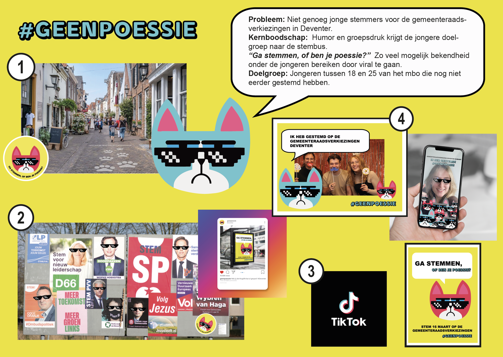
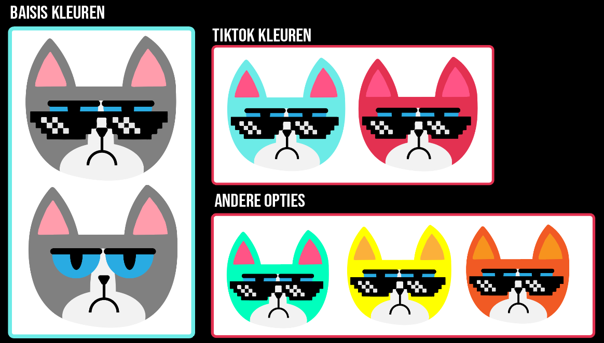

Schoolopdracht campagne Gemeente Deventer
Van de Gemeente Deventer hebben we de opdracht gekregen een campagne te bedenken om jonge stemmers te motiveren te gaan stemmen voor de gemeenteraadsverkiezingen. Hiervoor mochten we de grens opzoeken, daarom hebben wij op basis van ons (doelgroep)onderzoek gekozen voor de slogan "#geenpoessie" en de volgende campagne bedacht.

De campagne is gebaseerd op de verschillende beïnvloedingsprincipes van Cialdini en daarom opgedeeld in verschillende fasen: Fase 1: Stickers en referse graffity in de stad op plekken waar de doelgroep komt en richting de stemloocaties.
Fase 2: Thuglifebrilstickers en stickers met de kat op verkiezingsposters. Dit ook delen op "#geenpoessie" sociale media.
Fase 3: Onze "Ga stemmen" posters en de tiktokchallenge.
Fase 4: Photobooth en een snapchatfilter bij de stemlocaties.

De kleuren en het gebruik van de memes (Thuglife en Grumpycat) is gebaseerd op het doelgroep onderzoek. Ik heb hier vervolgens in Adobe Illustrator de kat van gemaakt zoals die hier te zien is.
De mock-ups zijn gemaakt in Adobe Photoshop.